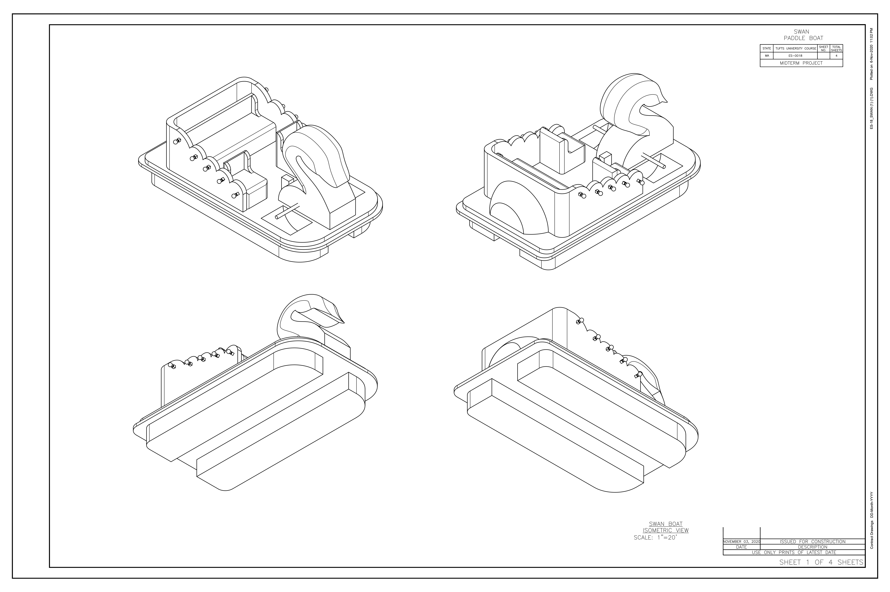

PROJECTS
ENP
For my Methods of Human Factors class, I developed a toy and application to be used by children less than 5 years old and their adults. I created the ASL BABY HAND 3D, a toy designed to help children learn and practice American Sign Language. The toy is in the shape of a single human hand and primarily focuses on helping children learn the ASL alphabet and improve their finger spelling fluency. The letters of the ASL alphabet can be easily molded on the 3D hand and when you connect to the application there are even more features to explore, such as "LEARN", "PLAY", and "SETTINGS".
In "LEARN" children and parents can learn new ASL signs and words, all while forming a deeper bond with each other and a new avenue of communication. On the app, users also have the option to play out letters and numbers on the automated 3D hand. In "PLAY" users can test their knowledge on the app or on the toy. The latter option is perfect for children during individual play time without parent supervision. The 3D hand has an interface that displays the letter or number. The interface lights up green for correct answers and red for wrong answers. The visual integrations makes the ASL BABY HAND 3D perfect for both hearing and hard of hearing users. The app also has customizable features, where users will be able to add more words to their finger spelling library and can increase the sign play speed as they improve fluency.
Click here to view my user testing conducted over zoom!
Click here to view the wireframe on Figma!
CAD
For my CAD final, I 3D modeled the kitchen counter at my off-campus apartment. This is where I've spent the most time at home while in isolation during the pandemic. At the sink is where I wash the dishes, care for my house plants, and stare out the window. I used CAD to 3D model all the kitchen parts individually. I then imported the objects into 3Ds Max to create the small animation.
CAD
For my CAD midterm, I was tasked to create a 3D lamp. I drew inspiration from the swan peddle boats at the Echo Park Lake in Los Angeles. Echo Park is one of my favorite places to go. The park recently added string lights to all the peddle boats and I love how they illuminate the lake at night. Peddling on the swan boats are a fun time and a nice dose of the outdoors in the city. In AutoCAD I used polylines to draw the walls and head of the 5-person swan peddle boat. I extruded and subtracted from the shapes to get each part, and I used the light bulbs provided to us to detail the curves.
..
CAD
I took Computer Aided Design at Tufts University Fall 2020. In class, I learned how to use AutoCad and Inventor. Using Inventor, I modeled the legs, knobs, and clamps individually. Then, I assembled all the parts together to create the tripod.


WEB PROGRAMMING
Spring 2020 semester, I took Web Programming at Tufts University. For the midterm project
my team created a Boston Tourism site using HTML, CSS, and Javascript.
I developed the homepage, which includes a navigation bar and a photo carousel.
You can view our website here.